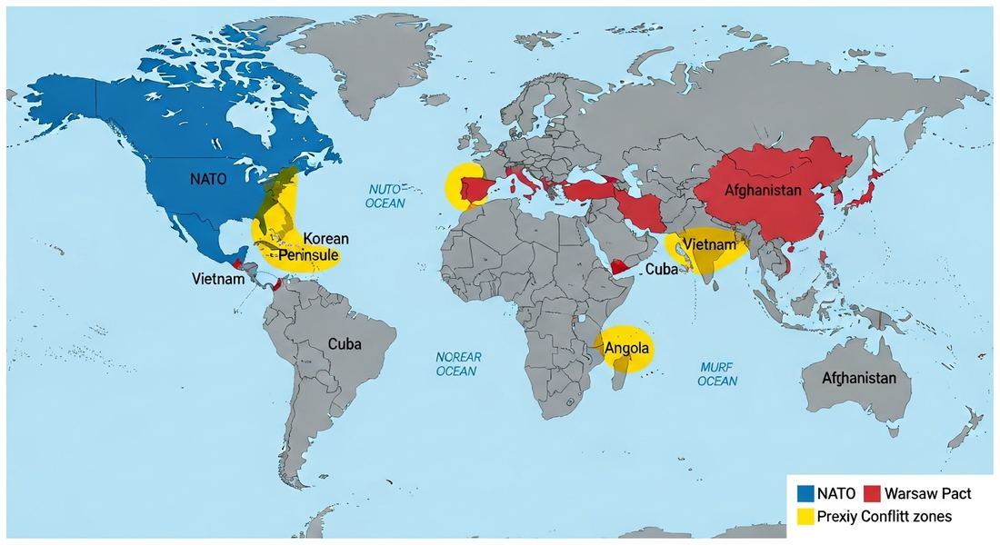

8.3 Effects of the Cold War
- LO-A: NATO and the Warsaw Pact divided Europe into two armed camps: NATO (1949) aligned Western democracies under US leadership; the Warsaw Pact (1955) aligned Eastern European communist states under Soviet leadership. These military alliances institutionalized the Cold War divide and made any European conflict potentially nuclear. Nuclear proliferation created a new kind of terror: By 1949 both superpowers had nuclear weapons. By the 1960s, both had thermonuclear (hydrogen) bombs capable of destroying entire cities. The doctrine of "Mutually Assured Destruction" (MAD) kept the peace between superpowers, but made every conflict a potential trigger for annihilation. Proxy wars were the Cold War's actual battlegrounds: Because direct superpower conflict risked nuclear war, the US and USSR fought through local forces, the Korean War, Angolan Civil War, and Sandinista-Contras conflict in Nicaragua. These are all required CED illustrative examples. Millions of people died in proxy wars. The US and USSR used different tools to maintain influence: The US relied on economic aid (Marshall Plan model), military alliances, CIA covert operations, and support for pro-Western governments including authoritarian ones. The USSR relied on military aid, Soviet advisors, support for communist parties, and direct intervention in Eastern Europe.
Try each question before revealing the answer.
1. What is a "proxy war" and why did the Cold War produce so many of them?
2. How did NATO and the Warsaw Pact differ from previous military alliances in history?
3. Compare the US and Soviet approaches to maintaining influence over "postcolonial states." What did each do?
- Compare the ways in which the United States and the Soviet Union sought to maintain influence over the course of the Cold War, including NATO, Warsaw Pact, nuclear proliferation, and proxy wars. CED Illustrative Examples: Korean War, Angolan Civil War, Sandinista-Contras conflict in Nicaragua.
Tap a term for its definition.
-
Definition: North Atlantic Treaty Organization, a military alliance of Western democracies (US, Canada, Western Europe) with a collective defense commitment: an attack on one is an attack on all. Significance: Institutionalized the US commitment to defending Western Europe and created the Western Cold War bloc.
-
Definition: Soviet-led military alliance of the USSR and Eastern European communist states, created in response to West Germany joining NATO. Significance: Institutionalized Soviet military dominance in Eastern Europe and formalized the Cold War's military division of Europe.
-
Definition: The spread of nuclear weapons beyond the original atomic powers (US 1945, USSR 1949, UK 1952, France 1960, China 1964). Significance: Made the Cold War uniquely dangerous, by the 1960s, both superpowers had enough weapons to destroy civilization multiple times over.
-
Definition: The doctrine that nuclear war between the US and USSR would destroy both sides, making rational that neither would initiate nuclear conflict. Significance: Paradoxically, the threat of total destruction kept the Cold War "cold", but required constant tension management and made every proxy conflict potentially dangerous.
-
Definition: War between communist North Korea (backed by China and USSR) and South Korea (backed by US-led UN forces), ending in armistice with Korea divided at the 38th parallel. Significance: CED required proxy war example; demonstrated that Cold War competition could produce hot wars with massive casualties (approx. 2.5 million dead).
-
Definition: Post-independence civil war in Angola between the US-backed UNITA/FNLA and the Soviet/Cuban-backed MPLA. Significance: CED required proxy war example; Cuba directly sent troops to support the MPLA at Soviet request, showing how proxy wars could involve third parties, not just the two superpowers.
-
Definition: Conflict in which the Sandinista government (Marxist, backed by USSR and Cuba) was opposed by US-funded and trained Contra rebels throughout the 1980s. Significance: CED required proxy war example; the Reagan administration's secret funding of the Contras despite a Congressional ban led to the Iran-Contra scandal.
-
Definition: A 13-day standoff in which the US discovered Soviet nuclear missiles being installed in Cuba, bringing the world closer to nuclear war than at any other Cold War moment. Significance: Resolved diplomatically (Soviets removed missiles; US pledged not to invade Cuba and secretly removed missiles from Turkey), showed that nuclear deterrence could work but was terrifyingly fragile.
🏛️ Military Alliances: NATO and the Warsaw Pact, KC-6.2.IV.D
The Cold War's first major institutional effect was the creation of permanent, peacetime military alliances that divided Europe (and the world) into armed camps. The North Atlantic Treaty Organization (NATO), founded in 1949, committed the US, Canada, and Western European democracies to collective defense: an armed attack against one member was an attack against all. This formalized the American nuclear "umbrella" over Western Europe. Soviet attack on any NATO member could trigger US nuclear response.
The Soviet Union responded in 1955 by creating the Warsaw Pact, a military alliance of the USSR and its Eastern European satellite states (Poland, East Germany, Czechoslovakia, Hungary, Romania, Bulgaria, Albania). The Warsaw Pact institutionalized Soviet military command over Eastern Europe, allowing the USSR to station troops in member countries and intervene if communist governments were threatened, as it did in Hungary (1956) and Czechoslovakia (1968).
The result was a militarized Europe where any local conflict risked escalating to nuclear war. The phrase "trip wire" captured the danger: Soviet troops were so close to NATO forces in Germany that even a minor incident could trigger a catastrophic chain reaction. Both alliances invested massively in conventional and nuclear weapons, creating the arms race that consumed enormous economic resources throughout the Cold War.

Image credit not specified.
AI-generated illustration (Google Gemini, 2025), commercially licensed.
☢️ Nuclear Proliferation and the Bomb's Shadow
The United States had used atomic bombs against Japan in August 1945. By August 1949, the USSR had tested its own nuclear weapon, years earlier than American analysts had predicted, partly due to Soviet espionage. By the early 1950s, both sides had tested thermonuclear (hydrogen) bombs, far more powerful than the atomic bombs used on Japan. By the 1960s, both superpowers had enough weapons to kill all of humanity many times over.
The resulting doctrine of Mutually Assured Destruction (MAD) was grimly logical: if either side launched a nuclear first strike, the other side had enough surviving weapons to retaliate and destroy the attacker. Both sides would be annihilated. Therefore, rational leaders would never initiate nuclear war. The problem was that deterrence required rational actors and perfect communication, conditions that didn't always hold. The Cuban Missile Crisis of October 1962 brought the world the closest to nuclear war: for 13 terrifying days, the US and USSR faced off over Soviet nuclear missiles in Cuba, and the outcome depended as much on luck and individual judgment as on strategic calculation.
⚔️ Proxy Wars: The Cold War's Hot Fronts
Because direct superpower conflict risked nuclear annihilation, the US and USSR fought the Cold War through proxy wars, supporting opposing sides in conflicts in third countries. The CED identifies three required illustrative examples: the Korean War, the Angolan Civil War, and the Sandinista-Contras conflict in Nicaragua. Know all three.
The Korean War (1950–1953): After WWII, Korea was divided at the 38th parallel, communist North Korea (backed by USSR, then China) and US-aligned South Korea. In June 1950, North Korea invaded South Korea. The US led a UN coalition that pushed North Korea back, then advanced toward the Chinese border, triggering a massive Chinese intervention. The war settled back near the original dividing line and ended in armistice (1953). Korea remains divided today. Approximately 2.5 million people died, including 36,000 Americans. The Korean War established that the US would fight militarily to contain communism, and that China was a major military power.
The Angolan Civil War (1975–2002): Angola gained independence from Portugal in 1975, but multiple nationalist factions immediately went to war. The US backed UNITA (led by Jonas Savimbi) and the FNLA; the USSR backed the MPLA (Movimento Popular de Libertação de Angola), which also received direct military support from Cuba, tens of thousands of Cuban troops fought in Angola on the MPLA's behalf. The MPLA won control of the capital and was recognized internationally, but the civil war continued for decades, killing hundreds of thousands. Angola became a classic Cold War proxy battleground played out in an African postcolonial setting.
Sandinista-Contras Conflict in Nicaragua: In 1979, the Sandinista movement overthrew the US-backed Somoza dictatorship in Nicaragua and established a Marxist government aligned with Cuba and the USSR. The Reagan administration responded by funding, training, and arming "Contra" rebels to fight the Sandinistas, even after the US Congress banned such aid (leading to the Iran-Contra scandal, in which the Reagan administration illegally sold weapons to Iran and used the proceeds to fund the Contras). The conflict killed tens of thousands of Nicaraguans throughout the 1980s.
🌍 The Cold War in Postcolonial States
The three proxy war examples, Korea, Angola, Nicaragua, illustrate a crucial pattern: the Cold War's most violent effects were felt not in Europe (where nuclear deterrence kept the peace) but in postcolonial states in Asia, Africa, and Latin America. These countries became battlegrounds for superpower competition, often against the wishes of their own peoples.
The consequences were devastating: millions of civilians killed; infrastructure destroyed; development distorted by military spending; governments chosen for Cold War alignment rather than popular legitimacy. Local conflicts that might have been resolved regionally were instead prolonged by superpower support for opposing factions. The Cold War logic that "the enemy of my enemy is my friend" meant the US and USSR both supported deeply repressive governments, as long as they were on the right side of the ideological divide.
These videos will help you review Effects of the Cold War and solidify key concepts before your exam.
- Directly involved US and Soviet ground troops fighting each other
- Occurred in postcolonial states where the US and USSR supported opposing sides to advance Cold War interests without direct superpower military confrontation
- Were resolved through United Nations peacekeeping operations that ended the Cold War competition in each country
- Resulted in communist victory in all three cases, demonstrating Soviet Cold War success
- Required massive military spending that ultimately destroyed the US economy
- Guaranteed that smaller nations could not develop nuclear weapons because the superpowers controlled all nuclear materials
- Prevented the development of conventional military forces, making both superpowers dependent solely on nuclear weapons
- Maintained peace between the superpowers by making nuclear war so catastrophic that rational leaders would not initiate it, while simultaneously making every Cold War conflict a potential trigger for civilization-ending war
- The Soviet Union's desire to establish formal communist governance throughout Eastern Europe
- The United States' deployment of nuclear weapons to Western Europe
- West Germany's admission to NATO, which the USSR viewed as a direct threat requiring a counterbalancing military alliance
- The Korean War's demonstration that communist forces could be defeated without allied support
- Proxy wars in Korea, Vietnam, Angola, Nicaragua, Afghanistan, and elsewhere killed millions of civilians, destroyed infrastructure, and prolonged conflicts that might otherwise have been resolved regionally
- The Cuban Missile Crisis lasted 13 days and was resolved without any casualties
- The Berlin Wall was built without violence and stood for 28 years
- Nuclear weapons were never actually used during the Cold War, proving deterrence was perfectly effective
- The Soviet Union's inability to project military power beyond Eastern Europe without relying on allies
- The Non-Aligned Movement's inability to prevent Cold War intervention in African affairs
- The failure of US Cold War strategy in Africa due to budget constraints
- How proxy wars could involve multiple layers, a superpower (USSR) backing a regional power (Cuba) that deployed troops in a third country (Angola), extending the reach of Cold War competition